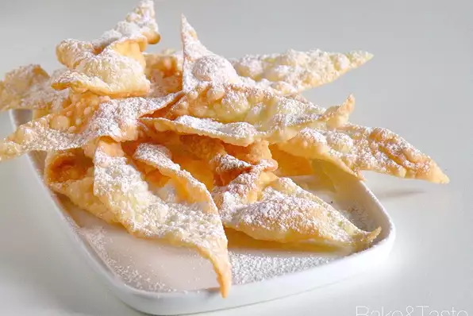

Faworki

Traditional Polish crispy pastry twists made for Carnival time. They are deep
-fried and sprinkled with confectioners' sugar. Light and delicious!
Ingredients
- 2½ cups all-purpose flour
- 6 egg yolks
- 3 tablespoons sour cream
- 2 tablespoons white sugar
- 2 tablespoons butter, softened
- 1 tablespoon rum
- 1 pinch salt
- 2 cups vegetable oil for frying
- ½ cup confectioner's sugar, or as needed
Steps
- Combine flour, egg yolks, sour cream, sugar, butter, rum, and salt in a
large bowl; mix to form a dough.
- Knead dough lightly and roll out on a floured surface. Cut into strips 4
inches long and 3/4 inches wide. Cut a slit in the middle of each strip.
Twist and pull one end through the slit.
- Heat oil in a deep-fryer or large saucepan. Test the temperature by dropping
in a pastry twist; the oil is ready when it browns and float to the surface.
- Fry pastry twists in batches until golden brown, about 1 minute per side.
Drain on a plate lined with paper towels. Dust with confectioners' sugar.